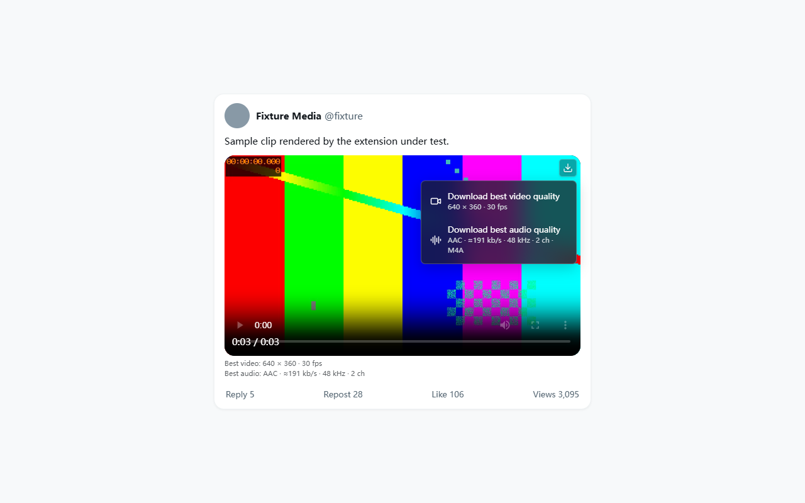

Independent browser extension — not affiliated with X Corp.
Get the best file X actually serves you
A small glass download button appears in the corner of an X post
video. Click it to take the highest available video as MP4, or the
highest-bitrate audio track as M4A. The exact quality numbers appear
under the player — before you download anything.
A 28 px glass button with a 16 px icon sits inside the
video corner. Clicking it opens a menu where you choose video or
audio. The menu supports keyboard selection, closes on
Escape, and closes when you click outside it.
Details before the download
Under the player, outside it in normal document flow, the
extension shows resolution and frame rate, plus audio codec,
estimated bitrate, sample rate and channel count. Nothing has to
be downloaded first to see them.
Task popup
The toolbar icon opens a popup listing tasks with the quality
actually obtained, any limitation or fallback reason, and
controls to cancel or retry. It can jump to Chrome’s own
download page.
Files land in Chrome
Downloads go through the Chrome download manager, so the
destination follows your Chrome settings and stays under your
control. Names look like
x_author_1001551623938805763_1_480x360.mp4.
The interface
The button sits inside the video corner; the lines under the
player report the inspected video and audio.

One click opens the choice: highest video quality or highest
audio quality, each labelled with its measured parameters.
The same build with a Simplified Chinese browser language —
interface text follows the browser UI language.
These images are rendered by the packaged build against a local test
fixture: the colour-bar clip and the @fixture account
come from the automated suite, not from a real post. Regenerate them
with node scripts/store-assets.mjs.
Quality and audio behaviour
How “highest” is decided
“Highest” means the best version X serves and your
current access can reach — not the creator’s original upload.
Video candidates are ranked by real pixel dimensions, frame rate and
bitrate within the same codec; a direct MP4 link wins inside the
same tier. The player’s current setting, thumbnail size and
original_info are not treated as the downloadable
version.
Audio is compared per track and stays lossless
All available audio tracks are compared independently and ranked by
bitrate, sample rate and channel count. Audio is extracted from HLS
or MP4 losslessly into M4A — it is never
re-encoded to a lossy MP3, and a paired audio track is never
silently dropped. HLS is remuxed without re-encoding.
A leading ≈ means the bitrate was estimated by
sampling codec packets, in kb/s, kHz and
ch. It is a measurement, not a subjective opinion about
how something sounds.
Inspection is bounded, cancellable, and honest about partial data
Automatic inspection never creates a download file; it only reads
what is needed.
Two bounded probe queues prioritise videos currently in view.
Inspections that scroll away and are not used for a download are
cancelled.
At most four network requests run concurrently per media item;
32 KiB Range reads fetch only the headers and
sample tables, never a prefetched video body.
Every candidate is still inspected, keeping the 96-packet audio
and 64-frame video measurement ranges.
While inspection is unfinished the strip reads
“known … · confirming”. A partial result is
never labelled as the confirmed highest quality;
only a completed pass promotes it.
A probe with no result for 45 seconds is re-issued instead of
freezing on “checking”, and one probe channel stays
available even while two merges are running.
Throughput limits you may notice
At most two download tasks run at once, with only one media merge or
audio extraction in progress, and up to 20 tasks can queue. Video
and audio requests for the same video are de-duplicated separately.
Temporary media is held in OPFS so memory stays bounded, and Chrome
deletes the temp files once the save completes. If a candidate fails
the task can fall back automatically and says so; cancel, disk and
rate-limit errors stop the task instead of retrying forever.
Session cache
Display summaries are reused for 15 minutes and download
candidates for 2 minutes inside the browser session — service
worker sleep and offscreen document close do not clear them. A
changed signed URL invalidates the entry. Nothing is cached across
browser sessions and no credentials are stored.
Supported and not supported
This list is the product boundary, copied from what the extension
actually claims. If a capability is not listed as supported, assume
it is not.
Supported
Videos hosted on X.
Animated GIFs that X stores as video files.
Posts with several videos: each one is downloaded separately
and located independently.
Quote posts and reposts, attributed by media ID, preview image
and post link — when that cannot be confirmed, the extension
does not guess.
Data already present in the page (GraphQL/SSR), then a limited
media read as the video nears the viewport, then the owning
post detail and X’s own public embed endpoint as
fallbacks, without infinite retries.
Media you can already obtain, or normally could obtain, under
your current access conditions.
Keeping started tasks alive when you close or leave the source
page; the background worker reconciles with offscreen tasks
and Chrome download records after sleeping or restarting.
Not supported
Live streaming recording, and Spaces.
External / non-X video sites.
Encrypted HLS and DRM content.
Bypassing login walls, protected accounts, regional blocks or
any platform challenge.
Fetching the original uploaded master file.
Resuming an interrupted HLS merge from an arbitrary segment
after the whole browser exits — such tasks are retried.
Lossy conversion such as MP3 output.
Any backend, account, API key, Python or FFmpeg dependency at
runtime.
A website can change its DOM, APIs and data structures at any time.
The extension is maintained against the site as it is; failures after
an X change need an update.
How to install
Three installation paths, labelled by status. Requirements for all
of them: Chrome or Edge 116 or newer. No sign-in to the extension
exists, so nothing to log into and no cookie to copy.
Path 1 · pending store approval
Chrome Web Store
Once the listing is approved, this is the one-click route, and
updates arrive through the store.
The listing URL is assigned by Google only after approval, so
…/pending is a placeholder and will not open
until the extension is published. Until then use Path 3.
Path 2 · pending store approval
Microsoft Edge Add-ons
The same extension package is submitted to Microsoft Edge
Add-ons for Edge users.
The Edge listing URL is assigned only after the Add-ons store
approves the submission; the link above currently goes to the
store home page. Until the listing is live, install from
Path 3 and turn on
edge://extensions → Developer Mode.
Path 3 · available now
Manual: load unpacked from the GitHub release
Download
x-video-downloader-1.3.0.zip from
the latest release
and unzip it. Checksums are published next to it in
SHA256SUMS.txt.
Open chrome://extensions and enable
Developer mode in the top-right corner.
Click Load unpacked and select the unzipped folder —
the one that contains manifest.json.
Reload any already-open X tab, keep your normal X session, and
click the download icon on a video.
Keep the folder in place: it is the extension’s install
directory. To update, unzip over the same folder, click the
refresh icon on the card in
chrome://extensions, confirm the version reads
1.3.0, then reload your X tabs. No re-login is
required. Re-using the same directory preserves the extension ID
and your local task records.
Permissions, and why
The manifest requests exactly these — nothing else, and no
<all_urls>.
Permission
What it is used for
downloads
Start, cancel and track downloads that the extension itself
created.
storage
Local task state in your browser, capped at 60 finished
records.
offscreen
Worker-based media processing and keeping the Blob URL alive
until Chrome finishes the save.
https://x.com/*
The page button and media data collected from that same page.
https://video.twimg.com/*
Reading media manifests and audio/video data.
https://cdn.syndication.twimg.com/*
Public embed metadata fallback for videos in view.
There is no cookies permission, no debugger permission,
no host-wide grant and no login bypass. Media requests never carry X
session authentication headers. Runtime code is bundled with the
extension: no remote scripts, no
eval, no remote module loading, no native messaging,
and no server of ours exists to talk to. Page messages only carry
media records and cannot start a download by themselves.
Troubleshooting
No button on a video I can see
Reload the X tab — content scripts only attach on load. After an
update or a manual re-install, reload the tab too. If the
extension folder was moved, load unpacked again from its new
location.
The strip is stuck on “checking”
Refresh the X page, or open the post on its own. Probes are
time-bounded and re-issued; if X is slow or refusing requests the
failure is reported instead of guessed at.
It says quality is limited, or that it fell back
Open the task popup: it names the actual quality obtained and the
reason. A failing top candidate falls back and keeps the warning;
results from possibly incomplete sources are marked as limited.
Cancel or retry from the same popup.
X itself asks me to log in, or shows 403 or a rate limit
Fix the page access first. The extension never bypasses login,
protection, region restrictions or platform challenges, and it
sends no X session credentials in media requests.
A download failed with a 429, a disk error or an invalid address
These stop the task rather than retrying in a loop. Free up disk
space (merging uses temporary files until Chrome finishes saving),
then retry. Rate limiting is X’s, not ours.
Audio option is greyed out
That media genuinely has no audio track, and the extension says so
instead of offering a fake option.
The browser was closed mid-merge
Interrupted HLS merges need a retry after relaunch; arbitrary
segment-level resume is not promised.
Nothing looks right after an X redesign
X can change its DOM or APIs at any time. Check
releases
for a newer build and file an issue with the post link if you are
current.
Source and privacy transparency
Read the code
Repository:
AuroraAeon/x-video-downloader. Original code is MIT-licensed; third-party libraries keep
their own licenses.
Bundled third parties: acorn 8.15.0 (MIT, read-only syntax tree
parsing), lucide 0.468.0 (ISC, icons), mediabunny 1.56.2
(MPL-2.0, media parsing and lossless muxing, unmodified). Full
texts ship inside the package as
dist/THIRD_PARTY_NOTICES.txt.
Reproducible package
Releases ship a versioned ZIP plus
SHA256SUMS.txt. Repeated full builds produce the
same archive hash, entries are sorted with fixed timestamps, and
packaging writes to a temp directory before atomically
replacing dist.
A release check rejects stray files in the build, widened host
permissions and a removed content security policy, so what you
load unpacked matches the reviewed manifest.
What leaves your machine
Only the requests needed to read the post and fetch the media you
asked for, from the three hosts above. Nothing is sent to us —
there is nowhere to send it: no analytics, no telemetry, no
crash reports, no backend.
See the
privacy policy for the storage
details, the 60-record cap and how to clear local records.